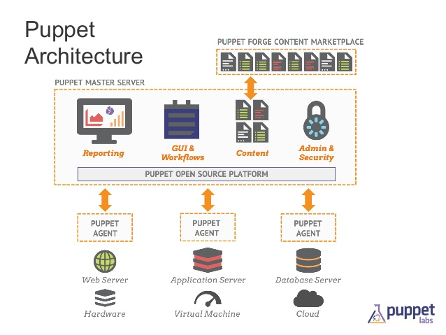
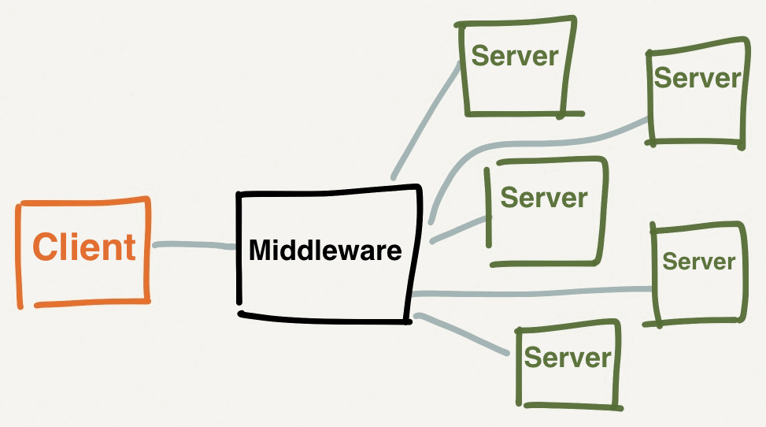
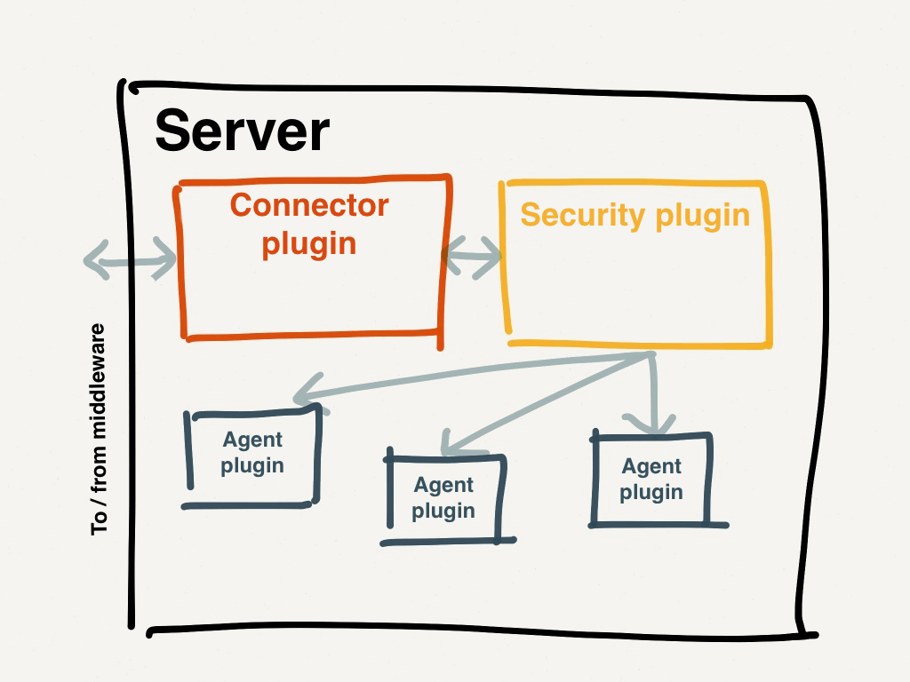
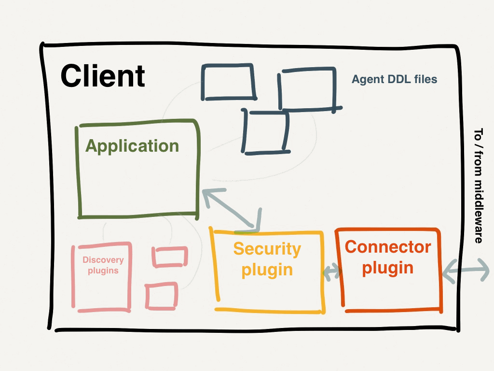

Created: 2016-11-14 Mon 08:29
puppet apply -e "notice('hello world')"

In config.pp
file { '_some_name':
path => '/tmp/test',
content => 'Hello world',
ensure => file,
}
puppet apply config.pp
Resources have a parameter / attribute which is called Namevar which has to be unique Namevar for file Resource is path
Cross platform system profiling library
facter
Output
architecture => x86_64
fqdn => IIT-LAPTOP-169
hostname => IIT-LAPTOP-169
id => ramz.sivagurunathan
productname => MacBookAir7,2
os => {"name"=>"Darwin", "family"=>"Darwin", "release"=>{"major"=>"15", "minor"=>"5", "full"=>"15.5.0"}}
osfamily => Darwin
...
Types
Core Facts
facter --show-legacy
$factname or $facts[factname]
Stores
If we are using exported resources then puppet uses puppetDB for searching and retrieving facts


